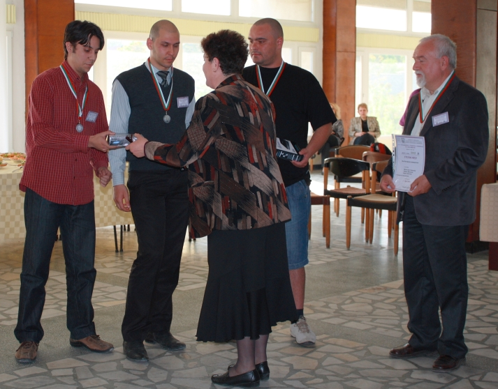
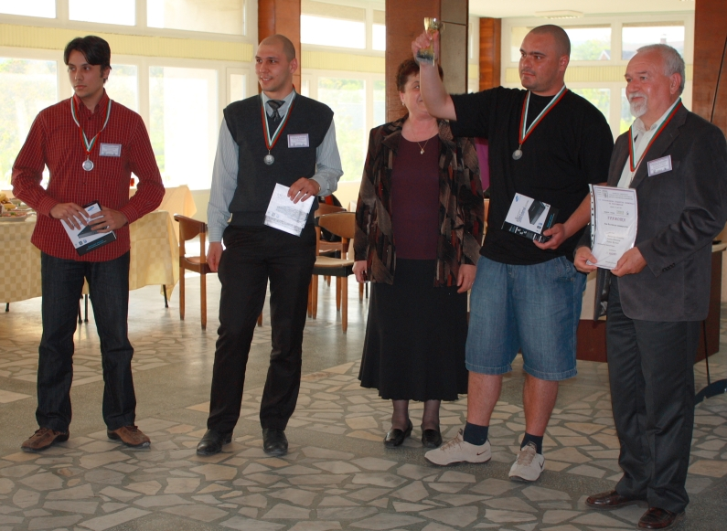
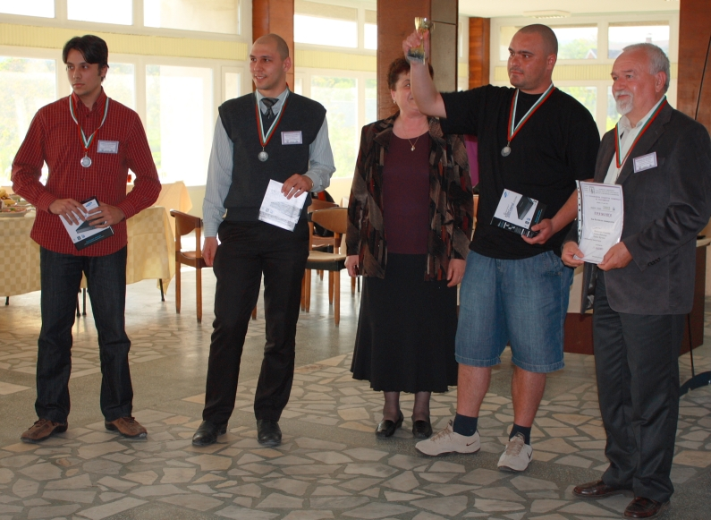

на XXIІI Републиканска студентска олимпиада по програмиране
за НБУ
Отбор NBU1
| 1 |
Велислав Николoв | маг. |
Софтуерни технологии в Интернет |
| 2 |
Камен Великов | 3 |
Информатика |
| 3 |
Кирил Вучков | 2 |
Информатика |
Решени 5 задачи, 729 минути, 4-то място в отборното класиране, най-добре представил се отбор от НБУ - купа, сребърни медали и второ място за НБУ!
Отбор NBU2
| 1 |
Нинко Ковачевич | 4 |
Информатика |
| 2 |
Александър Ненков | 4 |
Информатика |
| 3 |
Димитър Драгостинов | 2 |
Мрежови технологии |
Решени 5 задачи, 842 минути, 5-то място в отборното класиране!
Отбор NBU3
| 1 |
Мартин Маринов | 1 |
Мрежови технологии |
| 2 |
Андрей Ненчев | 1 |
Мрежови технологии |
| 3 |
Стефан Бонев |
1 |
Мрежови технологии |
Решена 1 задача, 138 минути, 22-ро място в отборното класиране.




Школа "Състезателно програмиране"
Студентски клуб "Състезателно програмиране"
Links:
http://www.nbu.bg/index.php?l=2178
http://www.musala.com/press/PR_2011_17_05/BG/press.html
http://4press.idg.bg/
http://www.nakov.com/blog/

Школа "Състезателно програмиране"
Студентски клуб "Състезателно програмиране"
Links:
http://www.nbu.bg/index.php?l=2178
http://www.musala.com/press/PR_2011_17_05/BG/press.html
http://4press.idg.bg/
http://www.nakov.com/blog/